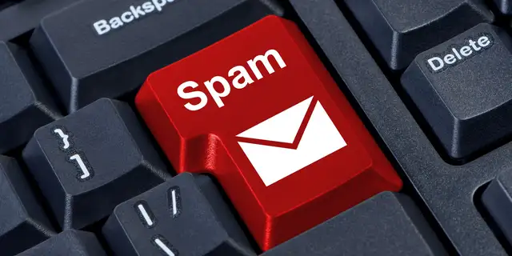
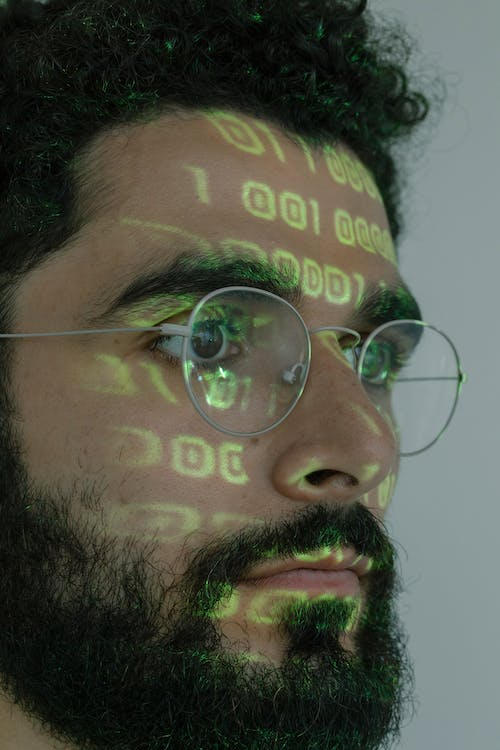

Op socialemediaplatformen als Twitter,
Facebook en Instagram weet je nooit zeker of je nou tegen een mens van vlees en bloed of een robot praat.
Met deze tips herken je de meeste spamaccounts op sociale media.
Waarom zetten mensen robots in om automatische berichten te plaatsen? De grootste reden is geld. Op socialemediakanalen zijn legers aan bots actief die links plaatsen, vooral naar malafide sekswebsites.
Ook het beïnvloeden van de publieke opinie kan een reden zijn om een trollenleger op te zetten. Zo zijn er groepen bots uit Rusland gevonden en trollen die de Amerikaanse verkiezingen een zetje wilden geven.
Maar ook als je wel een foto van een persoon ziet, is de kust niet veilig. Veel bots gebruiken plaatjes van mensen die ze op internet hebben gevonden, bijvoorbeeld van modellen. Via Google Image Search kun je dit controleren. Sleep de profielfoto in de zoekmachine om te zien of het plaatje ergens anders op internet te vinden is. Je weet dan vrijwel zeker dat het om een nepaccount gaat.

Ook de persoonlijke informatie in de biografie van het account kan een goede hint zijn. De meeste bots geven weinig over zichzelf bloot, alleen een verzonnen plaatsnaam of leeftijd. Pas als er informatie staat die je kunt controleren, weet je dat je waarschijnlijk met een echte persoon praat.Als je nog twijfelt, kijk dan naar de posts van het account. Trolaccounts delen vaak berichten van populaire mensen, om verbinding te zoeken met hun publiek. Zelf hebben ze nooit echt een gesprek met iemand die hen aanspreekt. Bovendien zie je bijna nooit iets over hun dagelijks leven, terwijl je dat bij echte mensen wel verwacht.
Let ook op het aantal volgers en volgende accounts. Bots volgen bijvoorbeeld zelf veel mensen op Instagram om aandacht te genereren, maar hebben zelf weinig volgers. Ook kun je zien hoelang een account al bestaat. Hoe langer iemand het al ergens uithoudt, hoe kleiner de kans dat het een bot is.
Tot slot kan het internet je nog helpen. Met sites als Follower Audit zie je of je eigen Twitter-account door nepaccounts wordt gevolgd. Op websites als BotSentinel en Botometer kun je zelf een account invoeren dat je verdacht vindt. Je krijgt dan een score voor hoe waarschijnlijk het is dat het om een botaccount gaat.
Klik in ieder geval nooit op verdachte links van spamaccounts. Vaak willen ze geld aan je verdienen, bijvoorbeeld door je naar seksueel getinte sites te lokken.